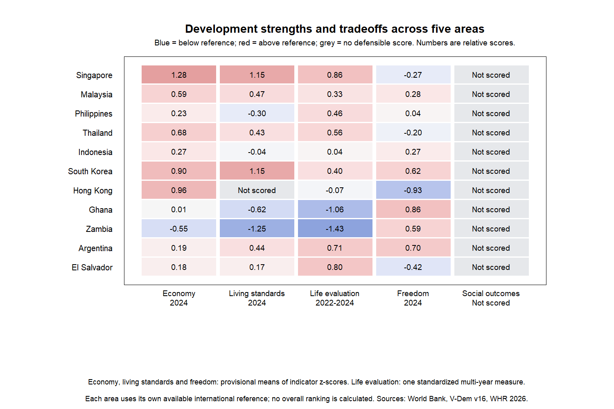
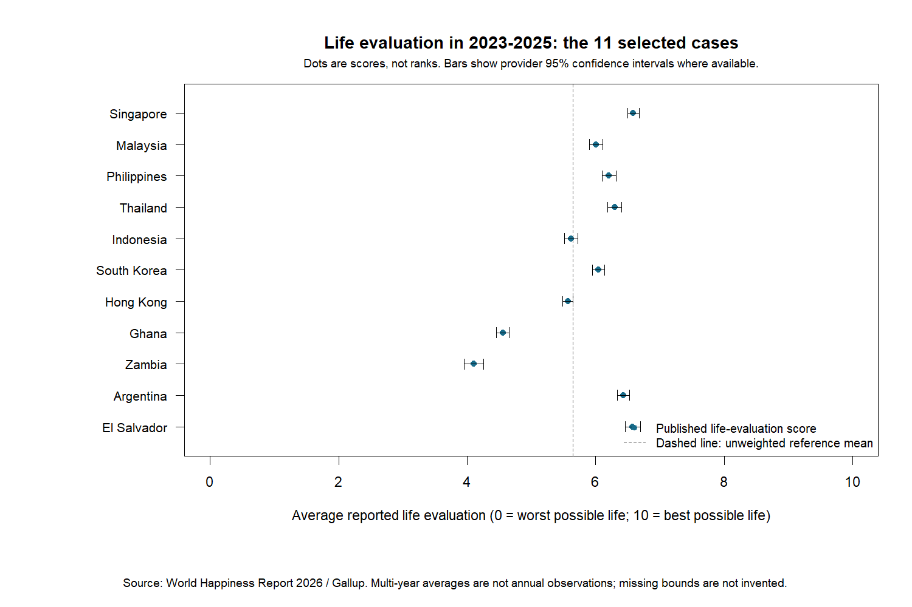
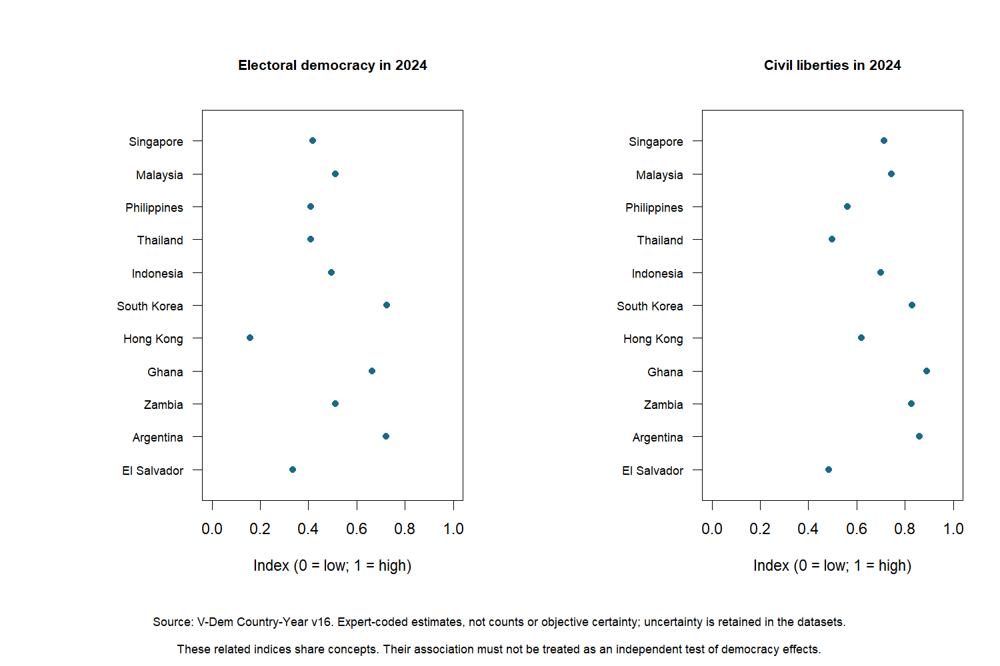
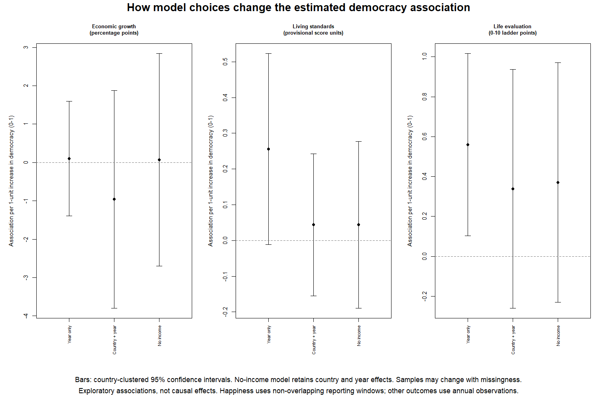
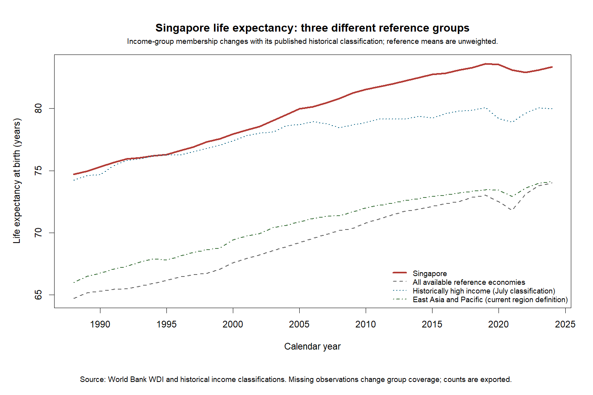

Latest research: Ownership/direct control and more comparable social measures.
Latest update: State-intervention measures and social-outcome survey audit: new data, charts and models.
Read the status of each area first, then inspect the charts. These results describe patterns and exploratory associations. They do not prove that a policy caused an outcome or can be transferred to another country.
Example: Singapore has a published life-evaluation score of 6.585 for 2023-2025. The matched international reference mean for that period is 5.643. This does not support assuming Singapore must have below-average happiness.
| Area | Available now | Important limit |
|---|---|---|
| Economic performance | Two-indicator provisional score; growth as separate model outcome | Ownership/direct control and public investment now have separate specifications; broader industrial policy still incomplete |
| Living standards | Four-indicator provisional score; fixed three-indicator sensitivity | Health overlap and changing education coverage |
| Happiness and well-being | Observed multi-year life-evaluation scores and provider uncertainty; not annual data | Annual Gallup series unavailable in the verified public download; one primary measure, not a composite |
| Freedom and governance | Three-index provisional descriptive score from V-Dem; all three required | Not an independent test of democracy effects; expert-coded uncertainty |
| Social and distributional outcomes | Observed PIP survey measures; SWIID standardized income summaries; UNDP gender inequality; separate local case studies | Provider-modeled summaries are not direct surveys; GII overlaps other domains; no universal social composite |





Sources: World Bank WDI/WGI, V-Dem Country-Year v16, World Happiness Report 2026 / Gallup. Source versions, definitions, crosswalks and download records are preserved in metadata/.